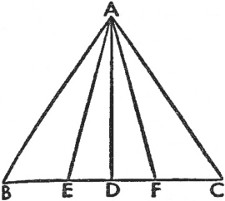
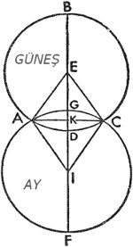
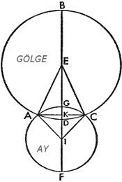

27. Ay Paralakslarıyla İlgili Açıklamanın Doğrulanması
Bu yüzden başka birçok gözlemle de (örneğin aşağıdaki gibi) yukarıda ortaya konan Ay paralakslarının, görünümlerle uyumlu olduğunu doğrulayabiliriz; bu gözlemi Bologna'da, İsa'dan sonra 1497 yılında, Mart ayının 15'inden evvelki 7. günde, günbatımından sonra gerçekleştirdik. Buna göre Ay'ın, Romalıların Paliticium dediği Hyades'in parlak yıldızının ne kadarını kararttığını gözlemlerken, bu bağlamda yıldızın, Ay'ın enine ve çapına göre güney boynuza 3/4'ü kadar daha yakın olmakla birlikte, en nihayetinde Ay'ın karanlıkta kalan kısmına geçtiğini ve gecenin beşinci saatinin sonunda Ay boynuzlarının arasında uzandığını gördük. Tablolara göre yıldız, 5 1/6º güney enleminde, İkizler'in 2º52'sında yer aldığından Ay'ın merkezi, görüş alanımıza göre, yıldızın batısına doğru çapın yarısıydı; o halde görünen konumu boylamda 2º36'; enlemde yaklaşık 5º6'ydı. Buna göre İsa takviminin başlangıcından itibaren Bologna'da 1497 Mısır yılı 76 gün 23 saat; yaklaşık 8º daha doğuda olan Krakow'daysa, eşit zamanla 4 dakika eklenmiş haliyle, 23 saat 36 dakika olmuştu. Güneş, Balık'ın 28,5ºsindeydi; bu yüzden Ay'ın Güneş'ten düzenli hareketi 74º; düzenli ayrıklık 111º10'; Ay'ın hakiki konumu, İkizler'in 3º24'sında; güney enlemi 4º35'; buna uygun olarak enlemin hakiki hareketi de 203º41'ydı. Dahası Bologna'da bu anda Akrep'in 26ºsi 57,5ºlik bir açıyla yükseliyordu ve Ay ufkun tepe noktasından 83º mesafedeydi; yükseklik çemberi ile ekliptik arasındaki kesit açısı yaklaşık 29º; Ay paralaksı boylamda 1º51', enlemde 30'ydı. Bütün bunlar gözlemlere kusursuz bir şekilde uyduğundan daha az kişi hipotezlerimizden ve onlardan çıkan sonuçların doğruluğundan şüphe edecektir.
28. Güneş ile Ay'ın Ortalama Kavuşumları ve Karşı Konumları Üzerine
Güneş ile Ay'ın kavuşumlarını ve karşı konumlarını gözlemleme yöntemi, onların hareketlerine dair söylenenlerden anlaşılabilir. Buna göre kavuşumun ya da karşı konumun meydana geleceği zamanla ilgili olarak Ay'ın düzenli hareketine bakacağız; bu düzenli hareketin bir çember oluşturduğunu görürsek, tam kavuşumun yarım çemberde gerçekleştiğini anlayacağız. Fakat bu durum nadiren ortaya çıktığından, Güneş ile Ay arasındaki mesafeyi gözlemlememiz gerekecek; bu mesafeyi Ay'ın günlük hareketine böldüğümüzde, her hareketin bir diğerinden ne kadar önde ya da gelecekteki kavuşumun veyahut karşı konumun ne kadar uzakta olduğunu bilmiş olacağız. Buna göre bu zaman için hareketleri ve konumları araştıracağız ve onlar sayesinde hakiki yeniayların ve dolunayların oranını gösterip, aşağıda da aktaracağımız gibi, ekliptik kavuşumlarını diğerlerinden ayırabileceğiz. Bütün bunları yerli yerine koyduğumuzda; zamanı, Güneş ile Ay ayrıklığının düzenli hareketini, tekil hareketlerin tekil hareketlere eklenmesiyle bulunan Ay'ın enlemdeki düzenli hareketini içeren on iki aylık tablo sayesinde kimi ayları inceleyebilmek ve kimi yıllarla devamını getirebilmek mümkün olacak. Fakat Güneş ayrıklığını hakiki olarak varsayacağız; böylece doğrudan doğruya düzeltilmiş halini de elde edebileceğiz. Zira başlangıcındaki, yani en yüksek apsidindeki, yavaşlığından ötürü bir ya da daha fazla yıl içindeki fark duyularla kavranamaz.
29. Güneş ile Ay'ın Kavuşumlarının ve Karşı Konumlarının Detaylı İncelenmesi Üzerine

Söylendiği gibi, bu göksel cisimlerin ortalama kavuşum ve karşı konum zamanlarını hareketleriyle birlikte elde ettikten sonra; hakiki kavuşumlarla karşı konumların bulunabilmesi için, diğerinden önde giden ya da diğerini takip eden bu cisimler arasındaki mesafenin detaylı incelenmesine ihtiyaç vardır. Ortalama kavuşumda ya da karşı konumda Ay, Güneş'in önüne gelirse; hakiki olan (kavuşum veya karşı konum) gelecekte gerçekleşecek; Güneş, Ay'ın önüne gelirse, aradığımız (hakiki kavuşum veya karşı konum) geçmişte gerçekleşmiş demektir. Bu, her ikisiyle ilgili olan eşitlemeler yoluyla da ortaya konur; zira hiç eşitleme olmasa ya da her iki toplama ve her iki çıkartma eşit ve aynı nitelikte olursa, aynı harekette hakiki kavuşumlar ve karşı konumlarla ortalama olanların denk geleceği açıktır. Fakat eşit değillerse fark aralarındaki mesafeyi, fazlalığın ya da eksikliğin önde ya da geride bulunan gökcisimlerinden hangisine ait olduğunu gösterir. Fakat dairelerin farklı bölümlerinde yer aldıklarında eşitlemesi eksiltici olan önde olur; eşitlemelerin eklenmesi ise aralarındaki mesafeyi gösterir. Bununla alakalı olarak, mesafedeki her derece için iki saat alıp Ay'ın kaç tam saat ilerleyebildiği sonucuna varacağız. Bu yolla mesafenin 6º kadarı söz konusu olursa, onlar için 12 saat almamız gerekir. O halde bu şekilde oluşturulan zaman aralığı için Ay'ın Güneş'ten hareketini araştıracağız; Ay'ın ortalama hareketinin her 2 saat için 1º1'; ayrıklığın hakiki saatlik hareketinin ise dolunay ve yeniay dönemlerinde yaklaşık 50' olduğunu bildiğimizde bunu kolayca gerçekleştireceğiz. Düzenli hareketi 3º3' kılan 6 saatte, 5ºlik hakiki ayrıklık hareketinde ve Ay eşitlemeleri tablosunda, eşitlemeler arasındaki farkı kaydedip onu, ayrıklık dairenin aşağı kısmındaysa ortalama harekete ekleyeceğiz; yukarı kısmındaysa ortalama hareketten çıkaracağız. Toplam ya da kalan, söz konusu saatlerde Ay'ın hakiki hareketi olacaktır. O halde bu hareket ilk mesafeye eşitse yeterlidir. Aksi durumda öngörülen saatlerin sayısıyla çarpılan mesafe bu harekete bölünmeli ya da hakiki basit hareketi kat edilen saatlik harekete bölmeliyiz. Bölüm, ortalama ile hakiki kavuşum ve karşı konum arasındaki sürenin saat ve dakika cinsinden hakiki farkı olacaktır. Ay, Güneş'in batısında ya da çapa göre Güneş'in aksi yönünde olursa, bu farkı ortalama kavuşum ya da karşı konum süresine ekleyeceğiz; Ay, Güneş'in doğusundaysa bu sefer çıkartacağız; böylece hakiki kavuşum ya da karşı konum zamanını elde etmiş olacağız. Her ne kadar Güneş ayrıklığının da ekleme ya da çıkartma yaptığını kabul etmemiz gerekiyorsa da, yine de rahatça göz ardı edilebilir, çünkü tüm bölgede ve –7ºnin ötesine geçen– en büyük uzanımda, ayrıklık 1'yı aşamaz ve Ay hareketlerini hesaplama yöntemi daha kesin sonuç verir. Bu yüzden sadece, saatlik geçiş hareketi dedikleri Ay'ın saatlik hareketine dayananlar kimi zaman hatalar yapar ve bol bol hesaplarını tekrarlamak zorunda kalır. Zira Ay, saat saat değişiklik gösterebilir; öyle olduğu gibi kalmaz. Bu yüzden, Ay'ın enlemini öğrenmek için hakiki kavuşum ve karşı konum zamanıyla ilgili olarak enlemdeki hakiki hareketi hesaplayacağız; yine ilkbahar ekinoksuyla alakalı olarak Güneş'in hakiki konumunu hesaplayacağız; burçlar vasıtasıyla Ay'ın hakiki konumunun aynı veyahut karşıt olduğu bilinir. Zaman burada Krakow meridyenine göre ortalama ve eşit olarak anlaşıldığından, yukarıda anlatılan yöntemle onu görünen zamana uyarlayacağız. Fakat bunu Krakow değil de başka bir yer için ayarlamamız gerekirse, yerin boylamını kaydedecek ve boylamdaki her bir derece için dört dakika; boylamın her dakikası için de dört saniye alacağız; yer Krakow'un doğusundaysa bunları Krakow zamanına ekleyecek, batısındaysa bu zamandan çıkaracağız. Ve böylece toplam ya da fark, Güneş'le Ay'ın kavuşum ya da karşı konum zamanı olacaktır.

30. Güneş ile Ay'ın Ekliptik Kavuşumları ve Karşı Konumları Diğerlerinden Nasıl Ayrılır?
Ay kavuşumunun ya da karşı konumunun ekliptikte olup olmadığı kolayca anlaşılabilir; Ay enlemi, Ay ile gölgesinin çaplarının yarısından küçükse, tutulmaya neden olacak, büyükse olmayacaktır. Fakat görünen kavuşumun önemli bir kısmının hakiki olandan ayrıldığı Güneş'te, her birinin paralaksı birbirine karıştığından, sanılandan daha fazla sorun ortaya çıkar. Buna göre hakiki kavuşum zamanında Güneş ile Ay arasında boylamdaki paralaksı incelerken, benzer şekilde Ay'ın bir saat içinde Güneş'ten ne kadar uzakta göründüğünü öğrenebilmek için batı çeyreğindeki hakiki kavuşumdan sonra ya da doğuda, ekliptik çeyreğinden önceki bir saatlik arada Ay'ın Güneş'ten görünen uzanımına bakacağız. Buna göre paralaksı bu saatlik harekete böldüğümüzde, hakiki ve görünen kavuşum arasındaki zaman farkını elde edeceğiz. Bu, doğuda görünen kavuşum hakiki olandan önce, batıdaki ise sonra geldiği için, ekliptiğin doğusundaki hakiki kavuşum zamanından çıkarılınca ya da batısındakine eklenince; sonuç, aradığımız görünen kavuşum zamanı olacaktır. O halde, Güneş'in paralaksını çıkardıktan sonra, bu zaman diliminde Güneş'le alakalı olarak Ay'ın görünen enlemini ya da görünen kavuşumda Güneş ile Ay'ın merkezleri arasındaki mesafeyi hesaplayacağız. Enlem, Güneş ile Ay'ın çaplarının yarısından büyükse, Güneş tutulması gerçekleşmeyecek; küçükse gerçekleşecektir. Buradan hareketle, hakiki kavuşum zamanında Ay, boylamda paralaksa sahip değilse; görünen ile hakiki kavuşumun aynı olacağı ve kavuşumun doğudan ya da batıdan hesaplandığında ekliptiğin 90ºsinde meydana geleceği anlaşılmış olur.

31. Güneş ya da Ay Tutulmasının Büyüklüğü Ne Kadar Olacak?
O halde Güneş ya da Ay tutulmasını öğrendikten sonra, görünen kavuşum zamanında Güneş ile Ay arasında görünen enlem sayesinde, Güneş tutulmasının ne kadar büyük olduğunu bilebileceğiz. Buna göre enlemi, Güneş ile Ay'ın çaplarının yarısından çıkardığımızda; kalan, çapı boyunca hesaplanan Güneş tutulması olacaktır. Yine bu sonucu 12 ile çarpıp çıkan sonucu Güneş'in çapına böldüğümüzde Güneş tutulmasının 1/12'sini rakamsal olarak bulmuş olacağız. Fakat Güneş'le Ay arasında enlem yoksa Güneş tutulması tam ya da Ay'ın kaplayabileceği ölçüde gerçekleşecektir. Görünen enlemin kullandığımız enlem olmaması dışında, Ay tutulmasıyla ilgili olarak da aşağı yukarı aynı yöntem kullanılır. Alınan Ay çapına göre Ay'ın enleminin, Ay'ın ve gölgenin çaplarının yarısından küçük olmaması koşuluyla; enlem, Ay'ın ve gölgenin çaplarının yarısından çıkarıldığında, kalan, tutulmuş Ay parçası olur. Bu yüzden tam bir tutulma gerçekleşir. Dahası daha az enlem, karanlıkta bir gecikmeye yol açar; bana kalırsa bunu hesaba katanların layıkıyla anlayacağı gibi, bu gecikmenin en büyüğü enlem olmadığında görülür. Buna uygun olarak belirli bir Ay tutulmasıyla ilgili, tutulan kısmı 12 ile çarpıp çıkan sonucu Ay'ın çapına böldüğümüzde, Güneş tutulmasıyla ilgili olduğu gibi, tutulmanın 1/12'lik kısmını elde etmiş oluruz.
32. Tutulmanın Ne Kadar Süreceğini Önceden Bilmek
Geriye tutulmanın ne kadar süreceğini bilmek kalıyor. Güneş, Ay ve gölge için kullandığımız yayların düz çizgilerden ayırt edilemeyecek kadar küçük olduklarını da kaydetmeliyiz. Buna uygun olarak A noktasını Güneş'in ya da gölgenin merkezi olarak alalım; BC çizgisi de Ay yörüngesinin geçişi olsun. B, Ay'ın Güneş'e değen merkezi ya da tutulmanın başlangıcındaki gölge; C de Ay geçişinin sonundaki gölge olsun.
AB ve BC eklensin ve AD, BC'ye dik olarak insin. Ay'ın merkezi D'deyken, bunun tutulmanın orta noktası olacağı açıktır. Buna göre AD, A'dan inen çizgilerin en kısasıdır ve AB, AC'ye eşit olduğundan BD, DC'ye eşittir ve AB veya AC de Güneş tutulmasında Güneş ile Ay'ın çaplarının toplamının yarısına eşittir. AD, Ay'ın hakiki enlemi ya da tutulmanın ortasındaki görünen enlemdir. Buna göre AD üzerindeki kareyi, AB üzerindeki kareden çıkardığımızda geriye BD'deki kare kalır. O halde BD, uzunluk bakımından bulunmuş olur. Bu uzunluğu Ay tutulması boyunca süren Ay'ın hakiki saatlik hareketine göre ya da Güneş tutulmasındaki görünebilir harekete böldüğümüzde, sürecin yarısını bulmuş oluruz. Fakat Ay sıklıkla, karanlığın ortasında geri kalır; bu da Ay ile gölgenin çaplarının toplamının yarısı, söylediğimiz gibi, Ay'ın enlemini çapının daha fazlası kadar aştığında meydana gelir. Buna uygun olarak, E'yi tam kararmanın başlangıç noktasına Ay'ın merkezi olarak yerleştirdiğimizde; Ay, gölgenin içbükey çemberine değdiğinde; Ay ilk belirdiğinde ve AE ile AF'ye katıldığında F diğer temas noktasında yer alır; böylece öncekiyle aynı yolla ED ve DF'nin karanlıktaki gecikmelerin yarımları olduğu anlaşılır. Zira AD, Ay'ın bilinen enlemidir; AE ya da AF ile birlikte, gölgenin çapının yarısı, Ay'ın çapının yarısından daha büyüktür. O halde DE ya da DF belirlenmiş olur; DE ya da DF'yi bir kez daha Ay'ın hakiki saatlik hareketine böldüğümüzde, aradığımız gecikmenin yarısını elde etmiş oluruz. Bunun yanında Ay, kendi yörünge çemberinde hareket ettiğinden, ekliptiğin kutupları boyunca geçen çemberlerin arasına girerek aynı yörünge dairesindeki yaylara tümüyle eşit olan ekliptik boylamının yaylarını keser.
Fakat fark çok belirsizdir; öyle ki Güneş ve Ay tutulmalarının üç aşağı beş yukarı en uzak sınırı olan ekliptik kesitinden toplam 12ºlik uzaklıkta, çemberlerin yayları birbirinden, 2'dan –bu da 1/15 saat eder– fazla farklılık göstermez; bu yüzden aynılarsa, çoğu kere biri yerine diğerini kullanırız. Ayrıca tutulma sınırlarında, tutulmanın orta noktası olarak, Ay'ın aynı enlemini kullanırız; Ay enlemi her daim artış ya da düşüş gösterir ve bu yüzden bir araya gelme ve uzaklaşma aralıkları tümüyle eşit değildir; ancak fark öyle belirsizdir ki, söz konusu aralıkları daha yakından incelemek gereksiz görünmektedir. Bu yolla tutulma zamanları, süreçleri ve büyüklükleri çaplara göre açıklanmış olur. Fakat tutulan bölümlerin, yüzeyler dışında tutulan başka bir bölüm olmadığından, çaplara göre değil de yüzeylere göre ayırt edilmesi gerektiğini düşünen birçoklarına uygun olarak ABCD, Güneş ya da gölge dairesi; E de merkez olsun. AFCG, Ay dairesi; I da merkez olsun. Daireler birbirini A ve C noktalarında kessin; BEIF düz çizgisi, her iki daireden geçecek şekilde çizilsin; buna IA, IC ve BF'ye dik AKC çizgisi eklensin. Bu sayede tutulan ADCG yüzeyinin ne kadar büyük olduğunu ya da tutulan kısma ait Ay ya da Güneş küresinin tüm yüzeyinin 1/12'sinin ne kadar olduğunu incelemek istiyoruz.
Bunun için her bir dairedeki AE ve AI yarıçapları ile merkezler ya da Ay enlemi arasındaki EI mesafesi, yukarıdaki gibi, bulunduğundan AEI üçgenini kenarlarıyla birlikte elde etmiş oluruz; bu sayede yukarıdaki kanıtlarla açıları da bulunur; AEI açısı, EIC açısına benzer ve eşittir; bu durumda çevre 360º olduğundan, ADC ve AGC yayları da bulunacaktır. Dahası Syracusalı Archimedes, dairenin hesaplanmasında daire çevresinin çapa oranının, 31/7'nin 1'e oranından küçük olduğunu ancak yine daire çevresinin çapa oranının, 310/71'in 1'e oranından büyük olduğunu kaydetmiştir. Ptolemaeus ise bunların arasında, 3p8'30''nin 1p'ye oranı gibi bir ortalama belirlemiştir. Bu oran sayesinde AGC ve ADG yayları, AE ve AI yarıçaplarına göre aynı bölümlerde bulunacaktır. EA, AD dörtgeni, AEC dilimine; IA, AG dörtgeni ise AIC dilimine eşittir. Fakat AEC ve AIC ikizkenar üçgenlerinde AKC ortak tabanı ve EK ile KI dikey çizgileri bulunur. Buna uygun olarak AEC üçgeninin alanını oluşturan AK, KE dörtgeni ve ACI üçgeninin alanını oluşturan AK, KI dörtgeni bulunur. O halde AFCK kesitinin AIC üçgeninden farkı, AFC daire dilimine; ABCK kesitinin AEC üçgeninden farkı da ABC daire dilimine eşittir; bu durumda aranan ADCG şekli bulunmuş olur. Dahası, Güneş tutulmasında BE ve BAD; Ay tutulmasında FI ve FAG tarafından oluşturulan dairenin tüm alanı bulunur. Buradan hareketle Güneş'in ya da Ay'ın toplam dairesinin 1/12'sinin ADCG'de ne kadar tutulduğu da açık olacaktır. Başkaları tarafından daha detaylı bir şekilde aktarılan Ay'la ilgili bütün bu hesaplar şimdilik yeterli olsun; zira sonraki kitaplarda üzerinde duracağımız diğer beş gezegenin devinimlerine zaman kaybetmeden geçmek istiyoruz.
Dördüncü kitabın sonu.